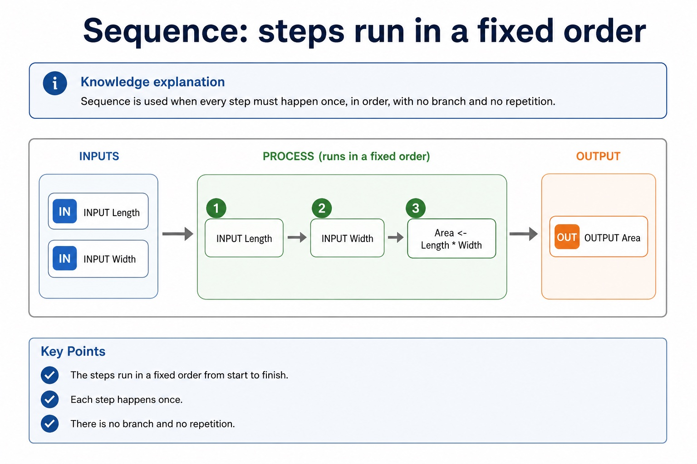
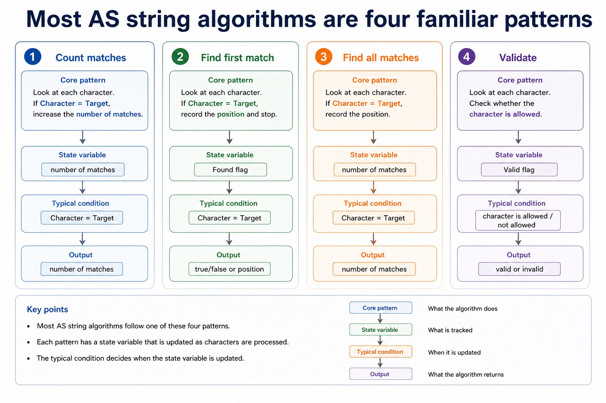
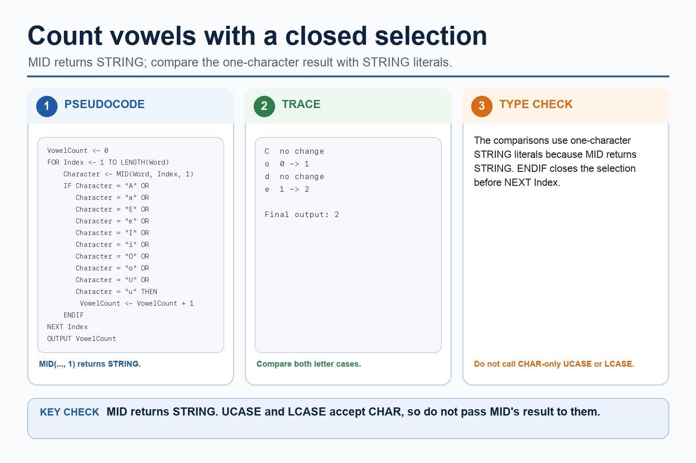

Cambridge AS9618 | Paper 2 | Section 9: Algorithm design and problem-solving
Algorithms and meaningful identifiers
Flexible-depth lesson
S9.03, S9.04 | Learn from the diagrams, test the method, then choose the practice you need.
Choose a Quick, Full or Deep route
Quick route
Use the diagnostic, learning objectives, first worked example and foundation question. Stop once the learner can explain the central distinction accurately.
Full route
Use every knowledge-point material set, the worked method, the terminology check and all questions.
Deep route
Add the prerequisite refresher, ask learners to connect the concept checklist, discuss the labelled extension and complete a transfer question without a model answer.
Part 1 | optional depth
Prerequisite knowledge and quick diagnostic
Recall the main conclusion from Lesson 047: Decomposition and modular problem solving.
Give one accurate definition or method step before continuing. If it is missing, revisit only that prerequisite.
Part 2 | knowledge-point material sets
Learn each point through visuals
Follow the map, the three-part explanation and the concrete cue. Open precise wording only after the idea is clear.
Open the concept checklist and choose what to teach
algorithm
solution
sequence
defined steps
meaningful
identifier
names
table
01
S9.03 · process
Algorithm · Solution · Sequence · Defined steps
Concept map
algorithmsolutionsequencedefined steps
See how it works
StartAn algorithm is a solution to a problem expressed as a sequence of defined steps
Changethe definition requires both the problem-solving purpose and the defined sequence
CheckThe algorithm is the defined sequence INPUT TicketCount
S9.03 diagrams
1 / 4
01
Process · 1 of 4
An algorithm is a solution expressed as defined steps
Open text transcript
An algorithm is a solution to a problem expressed as a sequence of defined steps.
Each step must be unambiguous, ordered where order matters and capable of being carried out.
Identify what data is supplied, state the required transformation and state the exact result.
Record limits, quantity requirements and supported assumptions.
Check that every requirement maps to an input, process, output, constraint or assumption.
02
Concrete example · 2 of 4
Stepwise refinement turns a high-level algorithm into implementable modules
Open text transcript
Stepwise refinement starts with a high-level algorithm and repeatedly replaces each complex step with a smaller sequence of defined substeps.
Refinement stops when every step is precise enough to implement and its input and output are clear.
At each level, preserve the parent step's purpose and input-process-output relationship.
Related substeps can be expressed as program modules, including procedures that perform actions and functions that return calculated values.
Every level must reduce ambiguity and collectively remain a complete solution.
03
Comparison · 3 of 4
Turn question wording into an algorithm plan
Open text transcript
Scenario triage
Step 1: Output first
Ask: what must be displayed, returned or stored at the end? The final output tells you which variables need to exist.
Output needed: average rainfall
Therefore:
Total is needed
Count is needed
Average <- Total / Count
04
Process · 4 of 4
Sequence: steps run in a fixed order

Open text transcript
Knowledge explanation
Sequence is used when every step must happen once, in order, with no branch and no repetition.
INPUT Length
INPUT Width
Area <- Length Width
OUTPUT Area
Open precise syllabus wording
Understand what an algorithm is.
An algorithm is a solution to a problem expressed as a sequence of defined steps; the definition requires both the problem-solving purpose and the defined sequence.
02
S9.04 · decision
Meaningful identifiers
Concept map
meaningfulidentifiernamestable
See how it works
EvidenceStudents must choose suitable meaningful identifier names and construct an identifier table that records each identifier's name, data type and purpose for the designed algorithm
Choiceand choose meaningful identifiers recorded in an identifier table
ReasonAn identifier table records at least the identifier name, data type and purpose
S9.04 diagrams
1 / 4
01
Diagram · 1 of 4
Dry run: execute the algorithm by hand
Open text transcript
1 Copy the variable names into table columns.
2 Write initial values before the loop starts.
3 Use each input value in order.
4 Update variables exactly when pseudocode updates them.
5 Record output only when an OUTPUT statement is executed.
02
Concrete example · 2 of 4
Turn paragraphs into a design table
Open text transcript
IPOC reading
Question to ask
Example evidence
Algorithm consequence
What data is provided?
mark, price, password, reading
use INPUT or given array/list item
What must be calculated or checked?
03
Comparison · 3 of 4
Readable notation earns marks more easily
Open text transcript
Notation rules
One entry Flowcharts should have a clear start and a clear direction of travel.
Decision labels Decision outputs should be labelled, usually Yes/No or True/False.
Indentation Indented pseudocode shows which statements belong inside a branch or loop.
Matching endings Use ENDIF, NEXT, ENDWHILE or equivalent to close a structure clearly.
Meaningful names Use Mark, Total, Count, Found instead of X1 unless the question gives X1.
No mixed syntax Do not mix Java braces with Cambridge pseudocode keywords in the same answer.
04
Comparison · 4 of 4
A trace table records variables after each change
Open text transcript
Knowledge explanation
What it records
Exam note
Line / step
which statement is being executed
optional, but useful for debugging
Input value
the test data read by INPUT
Open precise syllabus wording
Choose meaningful identifier names and construct an identifier table.
Students must choose suitable meaningful identifier names and construct an identifier table that records each identifier's name, data type and purpose for the designed algorithm.
Supporting diagram library
1 / 14
01
Diagram · 1 of 14
Abstraction: keep the details that affect the algorithm
Open text transcript
Keep details that affect an input, rule, calculation, constraint or output.
Ignore decoration that does not change the required result.
Ask whether removing a detail would change the result.
Explain why a detail is relevant or irrelevant rather than only labelling it.
02
Diagram · 2 of 14
Decomposition: split the problem into sub-problems
Open text transcript
Split the whole task into meaningful sub-problems with distinct responsibilities.
Express the resulting design as program modules with clear inputs, processing and outputs.
A module may become a procedure that performs an action or a function that returns a value.
Confirm that all modules connect into one complete solution.
03
Diagram · 3 of 14
Keep or ignore details
Open text transcript
Interactive abstraction filter
04
Diagram · 4 of 14
Produce an abstract model
Open text transcript
Underline the required output and keep only details that affect it.
Create verb-based sub-problems with distinct responsibilities.
State each sub-problem's input and output.
Check that the parts collectively meet every requirement without gaps or overlap.
The result is a natural-language responsibility plan ready for a later representation lesson.
05
Diagram · 5 of 14
Classify the design move
Open text transcript
Interactive task sorter
Design statement
Choose a statement to see whether it demonstrates decomposition, abstraction or an error.
06
Diagram · 6 of 14
Some algorithms construct a new string one character at a time
Open text transcript
Building output
Remove spaces from a string
NewString <- ""
FOR Index <- 1 TO LENGTH(Text)
Character <- character at position Index
IF Character < " " THEN
NewString <- NewString & Character
NEXT Index
07
Diagram · 7 of 14
A string algorithm needs position, character and stopping point
Open text transcript
Knowledge explanation
Concrete model
In Cambridge-style reasoning, text is processed by taking one character at a time from a known position.
Word <- "DATA"
FOR Index <- 1 TO LENGTH(Word)
Character <- character at position Index
OUTPUT Character
NEXT Index
08
Diagram · 8 of 14
Most AS string algorithms are four familiar patterns

Open text transcript
Core patterns
State variable
Typical condition
Character = Target
number of matches
Found flag
Character = Target
true/false or position
09
Diagram · 9 of 14
Count vowels with a closed selection

Open text transcript
MID(Word, Index, 1) returns a one-character STRING, so compare it with both upper-case and lower-case vowel strings.
Increment VowelCount only when the current one-character STRING is A, E, I, O, U, a, e, i, o or u.
Close the vowel selection with ENDIF before NEXT Index.
Do not pass the STRING returned by MID directly to CHAR-only UCASE or LCASE.
10
Diagram · 10 of 14
Trace character processing
Open text transcript
Interactive string scanner
Operation
Choose text and operation, then trace the string.
11
Diagram · 11 of 14
Turn vague answers into mark-worthy answers
Open text transcript
Interactive answer fixer
Weak answer
Choose a weak answer to see a stricter version.
12
Diagram · 12 of 14
Match the scenario to the correct algorithm pattern
Open text transcript
Pattern choice
Scenario clue
Core pseudocode feature
One precise explanation
exactly 10 readings
Count-controlled loop
FOR Index <- 1 TO 10
The number of repetitions is known before the loop starts.
13
Diagram · 13 of 14
Paper 2 wants readable Cambridge-style pseudocode
Open text transcript
Initialise Total and Count, then input the first Value.
While Value is not -1, add it to Total and increment Count.
Input the next Value inside the WHILE body before ENDWHILE.
If Count is greater than zero, calculate Average using real division and output it.
Java may support understanding but is not the Cambridge pseudocode answer format.
14
Diagram · 14 of 14
Section 9 in one page
Open text transcript
Retrieval map
Signal words
Expected mechanism
Typical marking error
IPOC / decomposition
scenario, requirements, constraints
break problem into inputs, processing, outputs and rules
copying the story without design decisions
Apply the idea
Worked method
01Define and plan a ticket algorithm
02input TicketCount and TicketPrice, then output TotalCost.
03The algorithm is the defined sequence INPUT TicketCount; INPUT TicketPrice; TotalCost <- TicketCount TicketPrice; OUTPUT TotalCost.
04The identifier table records TicketCount
05INTEGER, number requested; TicketPrice
06REAL, price of one ticket; TotalCost
Open precise terminology and exam facts
An algorithm is a solution to a problem expressed as a sequence of defined steps; the definition requires both the problem-solving purpose and the defined sequence.
Students must choose suitable meaningful identifier names and construct an identifier table that records each identifier's name, data type and purpose for the designed algorithm.
An algorithm is a solution to a problem expressed as a sequence of defined steps. Each step must be unambiguous, ordered where order matters and capable of being carried out; a vague instruction such as 'process the data' is not a defined step.
Before writing pseudocode, identify the input data, the processing that transforms it and the required output. This input-process-output design must describe a complete solution rather than three unrelated lists.
Choose meaningful identifier names that describe each value's role. An identifier table records at least the identifier name, data type and purpose; its entries must match the pseudocode solution.
Algorithm design review: define an algorithm as a solution expressed as a sequence of defined steps; use abstraction to retain essential details in an abstract model; use decomposition to express the problem as connected modules; and choose meaningful identifiers recorded in an identifier table.
Solution review: design with input-process-output, use sequence, selection and iteration, document the same algorithm in structured English, a flowchart or pseudocode, and convert between the specified representations without changing its control flow.
Development review: use stepwise refinement until steps are programmable, and construct and interpret logic statements that define decisions, loop conditions or Boolean values. Core answers must not replace these requirements with tracing, Java syntax or vague planning advice.
Beyond syllabus / 延伸知识（不要求背诵）
the same algorithm can be expressed in many programming languages; its logic should remain independent of syntax.
Part 3 | select by learner need
Practice by question type
completecalculatefoundation6 marks
Question 1. Complete an identifier table and an input-process-output pseudocode solution that inputs a student's name and three marks, then outputs the calculated mean.
Show answer and marking guidance
Answer: meaningful STRING identifier and purpose for the student's name; three clearly identified numeric mark inputs or a clearly bounded mark collection; meaningful REAL identifier and purpose for the mean; pseudocode inputs the required values; processing calculates the total and mean in a defined sequence; outputs the calculated mean and matches the identifier table
Marking guidance: Do not award an identifier list without types and purposes, or IPO headings without a complete sequence of defined steps.
Common error: For the command word complete, perform that exact action; do not replace it with an unrelated fact.
staterecallapplication2 marks
Question 2. State the official-style definition of an algorithm.
Show answer and marking guidance
Answer: A solution to a problem expressed as a sequence of defined steps.
Marking guidance: Award one mark for each distinct, technically accurate point or method step.
Common error: Do not repeat the same point in different words; each mark needs a separate idea or method step.
applyrecalltransfer2 marks
Question 3. What is an algorithm?
Show answer and marking guidance
Answer: A solution to a problem expressed as a sequence of defined steps.
Marking guidance: Award one mark for each distinct, technically accurate point or method step.
Common error: Do not copy the worked example unchanged; transfer the method and check it against the new context.
Related past-paper indexes
Reference
Marks
Command word
Question type
9618/21/S/24 Q2(b)
2
complete
recall
9618/22/W/23 Q2(a)
5
draw
diagram
9618/22/W/23 Q1(a)
4
complete
recall
9618/22/W/23 Q1(b)
4
complete
recall
Index only: Cambridge question and mark-scheme wording is not reproduced on this public course page.
Part 4 | close when ready
Summary and exam reminders
Summary
Define algorithms and meaningful identifiers with the exact technical vocabulary expected by the syllabus.
Use the lesson method on a fresh context and show the intermediate decision, representation or calculation.
Match the shape of the answer to the command word and the available marks.
Check the final answer against the scenario instead of repeating a memorised sentence.
Common error to correct
Students often create one sub-problem per tiny action. Correction: each sub-problem needs a meaningful responsibility.
Exam technique
Follow the command word: state gives a fact; explain links a cause to a consequence; compare covers both sides.
Match the number of independent points or method steps to the available marks.
For algorithms and meaningful identifiers, use the exact technical term before applying it to the scenario.